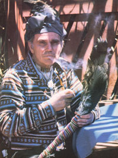

To his neighbors and coworkers in Carlin, Nevada he's John Pope, a veteran brakeman for the Southern Pacific Railroad. But his family, friends, and tribal brothers and sisters-as well as the hundreds of people who've witnessed demonstrations of his remarkable healing power-know him as Rolling Thunder, a native American Indian and heir to a traditional role among his people: that of intertribal medicine man.
In the manner of most such healers, Rolling Thunder deals more in matters of the spirit than of the flesh and-although he doesn't "do anything for show"-evidences of his ability have been said to astound the most skeptical of observers. For example, it's reported that several years ago Rolling Thunder agreed to conduct a healing ritual for a research group at the Edgar Cayce Foundation in Virginia Beach, Virginia. In addition to curing three patients with documented medical histories (who were selected before-hand by doctors at the conference), he treated a man who had severely crippled hands. However, Rolling Thunder first had to describe the individual's ailment so that the reluctant patient could be located in the audience and brought forward to be examined. After the healer told the audience to look for someone with gnarled, twisted hands hidden in his pockets, the "volunteer" was found, brought to the stage . . . and cured of his handicap. When he was questioned later about the incident, Rolling Thunder explained that the sick man's spirit had come to him the night before the ceremony and insisted that he promise to treat the man, since the unfortunate individual wouldn't have the courage to come forth and ask for help at the meeting himself.
Born in Oklahoma to Cherokee parents, reared in hardship, and later married to a Shoshone woman . . . Rolling Thunder is a modern-day Indian who's trying to preserve the heritage of his ancestors. Therefore-throughout his adult life-the medicine man has devoted his energies to various Indian causes (such as opposing the Bureau of Land Management's systematic destruction of pinon trees on Shoshone Indian land), as well as to easing the pain of persons who come to him asking for assistance.
Rolling Thunder's traditional name means "speaking the truth", and he does offer a message about native Americans that's sometimes grim and sometimes optimistic . . . but that always represents his true beliefs. The tribal healer's vision of reality is based upon the tragic past of his people and upon their close relationship to the earth . . . a special kinship between humanity and its environment that can provide inspiration for the simpler, back-to-the-land lifestyle so many folks yearn for these days. However, this native American offers an unusual attitude toward living lightly on the planet . . . one that is entirely spiritual in its origin.
Like most American Indians, Rolling Thunder has a profound respect for Mother Earth and for all of her life forms. During the course of his training in traditional native healing arts, the young Cherokee developed an awareness of and sensitivity to the spirit contained in all living things . . . and Rolling Thunder has words of wisdom for the modern homesteader who wants to return to his or her "roots" in the soil, and to live a life that's (quite literally) close to the land. He advises: "Love the earth, treat it gently, and it will reward you. "
Rolling Thunder also has much to say to practitioners of the various wholistic healing therapies. Since he's an inheritor and protector of ancient tribal secrets, the medicine man is naturally somewhat reserved when speaking with outsiders about such subjects . . . but he willingly shares much of his knowl edge with anyone who is seriously interested in his work.
To find out more about surviving native American medicinal traditions-and about the people whose culture developed and protects such rituals-MOTHER sent staffer Richard Colgan to visit Rolling Thunder at Meta Tantay, the community where the healer and 35 others live in a traditional native camp on the high plains of northeastern Nevada. During several hours of conversation (which have been edited to produce the following transcript), the two also discussed the past sufferings of native Americans, their present problems, and the future of this "n a tion within a nation".
PLOWBOY: You have said, "I was born to be a medicine man." How did you discover the nature of your calling?
ROLLING THUNDER: It's true that being a medicine man is a role one is destined for from birth. You don't simply read a few textbooks or go to a special school and then start hiring out your services . . . it doesn't happen that way. You just know it's meant to be, at least you do if you're an Indian. Many people have asked me-as you do now-how one knows that. Well, it's partly instinct . . . and partly the result of a deliberate search. Usually, a young Indian finds out his or her purpose in life at about 12 or 13 years of age. At that time, the youngster climbs to the top of a high mountain-or another similarly remote site-in some sacred area, and stays alone there for as long as three days while an older person waits at a distance.
The searcher carries no food or clothes-just a blanket-and spends the time fasting and praying. Eventually, a vision comes, revealing what he or she is supposed to do in life. Upon returning from the vigil, the young person describes the revelation to the wise elder . . . and then the two go together to the medicine man so he can interpret its meaning for them. Finally, the tribe has a big ceremony to formally name the young person and reveal his or her life's mission.
I learned my destiny through the events of my early years. You see, I was raised in eastern Oklahoma, in a range of the Ozarks called the Kiamichi Mountains. I've been told that before I was born-during my father's youth-those hills had all been Indian territory . . . but the land was gradually taken away from our tribe, and we retreated to the wooded areas to live. The Depression was on when I was a youngster, so we had to make a living practically with our bare hands, just as Our ancestors had done. At about the age of 15, I built my first house . . . a log cabin with a separate smokehouse and a corral for goats and hogs. I lived alone there for quite a while, and worked about an acre of land with a hoe and a shovel.
Those were mighty rough times, but they taught me a lot about nature and about ways of living in harmony with Mother Earth. I learned how to forage for nuts, berries, and roots in the forest and how to catch fish by setting traps in the water. I also taught myself to recognize all the local woodland plants, although I never got to know many by their English or Latin names. Instead, I made up my own labels for each one, and I learned how to use them for food and medicine. So you see, a lot of my early training took place during that period . . . and that education helped me once I learned that I was meant to become a medicine man.
PLOWBOY: When did you first become aware of-or "feel"your ability to heal . . . and where do you believe the power comes from?
ROLLING THUNDER: All I can say is that I woke up one morning, and this force was with me for the first time. I'd been doctored-in my sleep-the night before by a sun god and his helpers, and when I awoke I knew something was different . . . I felt this great power within me! But I had to learn to live with the tremendous force . . . to watch every thought or emotion I had, 24 hours a day. Since the force is so strong, you see, it has a great potential for misuse, and it could really hurt someone if it were employed in a negative or destructive way. It's difficult for a healer to adjust to that new-found power . . . we all have to learn to guard every thought, every word, and every feeling, since the power could use any such "channel" to affect someone in one way or another.
I believe the healing force contains the strength of the Creator-or Great Spirit-as well as the energy of the thunder and the lightning and that of all living beings. I sometimes also ask the stars or the sun to help me, or I may call on the great medicine men and tribal chiefs of the past. As a medicine man, I attempt to bring such forces together so they'll convey their healing power to the sick person.
PLOWBOY: How would you compare the spiritual approach of a medicine man to the medications and equipment used by a "modern" physician?
ROLLING THUNDER: I think most native healers look much further than does the average M.D., back to the original cause of a particular illness. In our Indian healing ritual, we take into account not only the patient's symptoms, but-more important-this or her whole lifestyle. The medicine man has a way of understanding what is meant to be, according to an individual's progress and development. You could almost say that Indian healers carry portable "X-rays", since they have to be able to see into the person, to analyze his or her sickness, and to discover what originally caused it. It's very important to look deep into the patient . . . deeper than the skin.
PLOWBOY: What are some of those "deeper than the skin" factors that can cause illness?
ROLLING THUNDER: I believe that physical troubles all start on the spiritual level. In fact, any infection of the body has its roots in a spiritual impurity. Every case of sickness or pain is a form of payment of a debt, either for some mistake in the person's past or for a future wrong . . . but that doesn't mean we're not supposed to do anything to remedy the situation. The medicine man's task is to find out what that debt is, and to learn how it can be repaid in another-usually less painfulway. On the other hand, sometimes a certain sickness or pain should be endured, because it's the best possible way to pay the debt involved. If such a pain is made to go away, the price may become greater in the long run. Anyone who is sick, obviously, thinks he or she wants to get well . . . but the person's spirit knows when it's right-or at least necessary-to be ill.
At any rate, what's happening to the body isn't the main problem, so true healing requires looking at more than the flesh. When a modern M.D. examines a sick patient, he or she may see only the illness and not the person behind that ailment. If the doctor doesn't understand what the problem really is, yet prescribes chemical drugs so the person won't feel anything or finds some troubled part of the body and cuts it out and throws it in the trash, those actions are probably unnecessary . . . and they certainly couldn't be called healing. As I've said, medicine men have to consider deeper factors in the course of treatment, so we always take many days to look into a case . . . and then we may decide not to accept it at all if we feel it isn't the correct time for the person to get well.
PLOWBOY: Can you outline the procedure and techniques you use when you do decide to take on a patient?
ROLLING THUNDER: Well, most medicine men have their own peculiar methods and equipment . . . and it's considered a matter of pride that each one works out an individual routine and doesn't copy anyone else. Of course, a new healer can watch another's procedure and get some idea of what to do, but the novice gradually develops the substance of a personal ritual, including the songs, prayers, and chants that are used.
However, a few general guidelines apply to the methods of almost all native healers. In the first place, it's best to conduct healing rituals in a natural setting, in the open air. If too many people started coming to my home to get doctored, for example, it could be bad-for my household. I've had trouble here before, when I've treated people with mental or emotional disturbances, with problems staying on in the house after the patients were relieved of them. My home is where I live and rest . . . and I don't want negative forces hanging around.
Second, I never charge anything for healing. It's said, among our people, that if a medicine man sells his services or commercializes his ability in any way, he'll lose his power. I don't make any guarantees for my cures, either, simply because nothing is absolutely sure in this life! However, if a person comes to me with an open mind and an open heart, chances are good we can find the answer to his or her problem.
Basically, the Indian medicine man examines the patient closely-on both a physical and a spiritual level-to determine what forces should be used to heal that person. Then he calls upon the power of the particular forces that are needed, usually by means of prayer and special chants. I also like to use my hands a lot, mainly to transfer energy. You see, hands can serve to transmit the energy that flows between the two halves of the body, negative and positive. It's really a spiritual force.
Prayer is a particularly powerful tool that medicine men employ in the course of healing. I believe that prayer isn't just a ritual to be observed in church on Sunday: It's a meaningful exercise that should be practiced 24 hours a day . . . and it can be used to achieve incredible results. Long ago, when an Indian would shoot a deer with a poisoned arrow, he'd make an offering . . . a prayer for that deer. Then he'd cut around the place where the arrow had entered and throw only that small piece of meat away. Whatever poison might remain in the deer was eliminated, we believe, through the prayer ceremony. In the same way, it's my contention that it's possible to pray certain poisons right out of a patient's body.
Herbs can also be used as "helpers". I gather my own plant for use in healing ceremonies, but that's not as easy as it may sound. It's necessary to know where and when to look for the plants, and then-once you've located the necessary one-show to approach them correctly so that they'll yield their special energy to you. When I go out to collect herbs, I can usually feel their presence before I actually see the plants . . . and often they simply appear when-and where-they're needed. In fact, there have been times when I've gathered summer flowers while snow was on the ground . . . but that sort of thing happens only when the need for the herb is very great.
I'm sure you've noticed that plants usually grow in clumps . . . well, that's because they tend to live in families or tribes, just as human beings do! When you want to cut off an herb's leaves or flowers, you should first pay your respects to the chief of the group by making a small offering (I use tobacco, or some item that's of personal value to me). Then you should communicate with the plant and tell it that you're going to take leaves from only a few of its tribal members, and that they're going to be used for a good purpose, for healing.
I never harvest more than half of a medicinal plant's foliage-so it can continue to reproduce-and if I find a stand of herbs that consists of just one or two individuals, I always pass it by. Now I know such precautions may sound silly to some people, especially those who think wild plants are nothing more than weeds . . . but to me, they're not weeds . . . they're living beings, and I respect them.
I'm also very careful about taking anyone along on my herb foraging expeditions. I have to know a person pretty well before I can let him or her come with me. There are all kinds of voices around that guide me to the plants I need, you see, and if someone else is busy asking questionslike "What does this herb do?" or "What's that one good for?"-I won't be able to hear and feel the advice given by those spiritual guides. Worse yet, if my companion is busy and confused in mind-if he or she has what I call a "civilized confusion"-then the plants we need will be impossible to find, even if they're right at our feet!
"The cleansing of the earth . . . starts with the cleansing of our minds. "
In addition to using prayers and herbs, medicine men employ the traditional Indian purification ceremonies, which cleanse the body and help it maintain good health. In the old days, when all our people lived by tribal tradition, purification-in the form of visits to sweat lodges, fasting, and other rituals-was practiced by everyone. Nowadays, our group here sometimes holds purification ceremonies in the local hot spring, where the warm mud soothes the muscles and calms the mind. We also have peyote ceremonies, in which we eat the bitter flower buttons-or drink a tea made from themfor purification purposes. Unfortunately, this ritual is often abused by outsiders. The peyote ceremony should not be used to get high or for any other foolishness. We use the herb in a way that we hope will cleanse our systems and our minds, so we can put ourselves on a higher plane of life.
While we're on this subject, I want to stress that what might be beneficial to one person probably isn't so good for someone else. It's said among our people that every race of humankind was given a certain medicine that's good for them. But when you use the other fellow's product, you can get into trouble. For instance, I've seen non-Indians make themselves very sick by fooling around with some of our sacred preparations, like peyote. Everything the Indians have is not necessarily right for white people, and everything white people have is not always good for the Indians.
PLOWBOY: What are some of the ways in which a non-Indian can purify him- or herself and achieve optimal health, without abusing tribal medicine or violating what is meant to be a sacred ceremony?
ROLLING THUNDER: There's an old Indian law that says, "Moderation in all things." I think that's the key to good health. I also recommend regularly cleansing the system in some way, either by careful diet or fasting. And it's important to eat wholesome, natural foods . . . although that isn't easy these days, with all the chemicals and additives that are put into nearly everything we eat and drink. The answer, I guess, is to grow your own food, so you can know what you're taking into your body.
Vitamins are a good idea, too, although I think the supplements should be used only as a temporary measure . . . as should any medicine. I believe that if a person takes them for too long, his or her body will gradually lose its ability to absorb the vitamins, and ever-increasing doses will be necessary to have any effect. In most cases, you should take them for no more than seven days in a row, and then only if necessary.
Personally, though, I prefer to build my energy by drinking a sort of kidney-and-liver "broth". I simply simmer some organ meats in a large pot of water for about 12 hours, and drink the stock . . . then I don't need any other vitamin supplements at all! Another traditional way to get energy is to drink the "thunder water", the rain that falls right after a lightning flash during a thunderstorm. That liquid is a potent source of permanent energy, because it's got power in it . . . including the prayers of the storm god!
Fresh air and sunshine are-of course-also important to the maintenance of a healthy body and mind. One of my favorite therapies is simply taking a sunbath in the dunes. I lie right on that hot sand, and the warmth flows through my whole body . . . it's a great treatment for an aching back! In fact, that's something like my idea of what would be the most comfortable bed in the world: not a mattress and frame at all, but a simple box built from boards and filled with hot sand, and maybe a cowhide skin or two laid over it. A person could really get a valuable rest on a bed like that!
PLOWBOY: Rolling Thunder, let's talk about the problems that have existed-and, unfortunately, continue to exist-between Indians and the other peoples that have come to live on this continent. How did all the trouble start, and how would you characterize the present state of affairs?
ROLLING THUNDER: Probably the best way to describe the roots of the problem would be to relate the history of just one of the many treaties made between the United States government and this land's various Indian tribes. The story of the Shoshone treaty, as it's been handed down among our people, is a sad tale to tell. The agreement, outlining the lands which constitute the territory of the Western Shoshone Nation, was made in Ruby Valley, Nevada in 1863. The treaty was signed by the principal chiefs, ratified by the Congress of the United States . . . and paid for, in blood, in a most horrible manner.
At that time, you see, the white people in these parts were few in number, and they came to the Shoshone asking for a peace treaty. The United States was at war within itself-they called it the Civil War-and President Lincoln needed gold from California in order to meet the country's military expenses. But the federal government couldn't spare enough soldiers to guard all the stage-coaches that would carry those shipments of gold across the continent, so they wanted to have a peace treaty with the local people . . . through whose land the bullion-carrying vehicles had to travel.
Therefore, the U.S. government put out the word that its representatives were anxious to meet with the chiefs of the Western Shoshone Nation for the purpose of signing such a treaty. Once a date was agreed upon, runners and horseback riders spread the word that there would be a big meeting and feast . . . and that the Indians should come unarmed.
At the appointed time, the Shoshone people and their leaders gathered in Ruby Valley. So did the government agents . . . accompanied by soldiers, who stacked their rifles in big piles. However, as soon as everyone was in place, the white soldiers brought forth an Indian prisoner-who was accused of robbing a stagecoach-picked up their weapons, and shot him. That killing would serve as a lesson, they said, to any other Indian who might have been thinking about obstructing the white people's passage through native lands. Then they cut up the dead brave and cooked him in a huge iron pot! Finally, the other Shoshone people were forced-at gunpoint-to eat the flesh of their dead brother. After that terrible event, the Treaty of 1863 was signed.
Other-although usually less horrid-atrocities were committed all over this country . . . and in many areas they occurred after the Indians had helped the newcomers! You know, when the Europeans started to flee the conditions in their, homelands, there was still room here for everybody . . . and the Indians said, "OK, you can share the land with us." Of course, in many settlements the Europeans were starving at first, so they gladly accepted the natives' help. But then, after they'd survived a first hard winter, they sometimes turned on their benefactors . . . and-in one form or another-the injustice is still going on today.
Our religion says that the land-all of Mother Earth-belongs to the Great Spirit, the Creator . . . and that humans are only its keepers, or "trustees", who are allowed to live on the soil and cultivate it. So we don't think we own the land, and we certainly don't believe that anybody else can own it, either. We say there's room for everyone, if we all share as brothers and sisters. But the white people's government decided that it could "take" the land from us, and that we could then be as signed to certain places to live.
The treaties that sent native Americans to specific reservations were supposed to be in effect for "as long as the grass grows, and the water flows" . . . and the boundaries of the areas were well laid out over a hundred years ago. Most of those reservations, by the way, are on land that's all but unsuitable for agriculture: Much of it is high, dry, and cold. At the time that the treaties were made, the U.S. didn't mind giving away such undesirable land . . . but now that coal and uranium have been discovered in some of those areas, it wants to take away what little territory we have left. The lawyers sent in by the federal government are trying to say the "eternal" agreements are no good anymore, and any Indian who tries to fight them is likely to end up in jail.
There are other ways in which native Americans are still being oppressed, too . . . many of which most white people aren't aware of. You know, there's a barrier to information in the eastern European countries called the Iron Curtain . . . and we've heard the term Bamboo Curtain used to describe the same sort of situation in southeast Asia. Well, out here we have the "Buckskin Curtain". The public just does not know and cannot imagine what goes on at the reservations.
For example, federal law now requires that Indians be hired for all government projects on native American land. Yet even when there's a need for carpenters and builders and local Indians are available- men and women who were taken out of their homes and sent far away to the white people's schools to learn those trades-you won't see our tribal members put to work on such projects. The government builds highways through our reservations and should legally hire our people . . . but it ends up importing expensive labor from other states, seemingly just to avoid using the local native American labor force!
It's also still quite common for Indian children to be "kidnapped" out of their own homes, usually under the guise of some sort of child care program, and sent far away from their birthplaces. Any excuse for taking the youngsters seems to be acceptable, provided some white family wants a child, or someone else wants to work to convert the "heathen" youngster. Such people will get together with the welfare agents and the sheriffs and the Indian agents, and they'll come to a reservation and take a child. The kidnappers might say they're doing so because the family is on welfare or has too many children, or for any other reason they can think of . . . and often no court papers are served at all. The young people then grow up far away from their own families, and lose all touch with native culture . . . many of them become adults without knowing a word of their tribe's language!
PLOWBOY: Can't Indian leaders take some sort of legal action against such injustices?
ROLLING THUNDER: No, because-as far as I can see-there really is no justice under law on the reservations. Off the reservations, a pretense of some kind of trial is occasionally made . . . but even then our people have no legal representation whatsoever. For instance, lawyers in Elko and other small towns in this part of Nevada are often "bought" by the big ranchers and the mining interests. Most of the attorneys don't care about poor clients . . . especially Indians, who are usually the poorest of all. And if the lawyers aren't independents who were bought out, they're sometimes actually appointed by the government. That's unique, I think, for a person's lawyers to be picked by his or her opponent . . . but we don't have any choice! Our people are dragged into the courts, and then they have to endure something that's more like a stage farce than an actual trial.
If an Indian is accused of a crime, for example, he or she is usually advised to plead guilty with the promise of a reduced sentence. And, the Indian is almost always convicted. Just a few years ago, a young man who was thrown in jail wasn't allowed to choose his own attorney . . . he was not permitted to see his mother before being tried . . . and his three witnesses weren't even allowed to appear in court. No one except the agency officials and the Bureau of Indian Affairs' puppet council was permitted to attend the trial. And this man's only real "crime" was that he had had the nerve to run for a position on the government-controlled tribal council!
Worse yet, many of our young people have been found dead in the towns and on the reservations. Sometimes they're murdered in jail . . . and we can't convict or investigate anybody, even when we know full well who's to blame. Then, to top it all off, there are rigged elections to get the "right" Indians-those we call "white man's Indians"-into positions of power on the tribal councils. Once they're in office, the "Uncle Tommyhawks" will agree to whatever the government wants: They'll sell the land for a few cents an acre, give away our oil rights and hunting rights, and so forth. So the Indians get cheated out of their land . . . and if any traditionalists decide to fight, they're ridiculed, put in jail, or worse. It's really kind of a hopeless situation.
On the other hand, though, many white people today want to befriend and understand native Americans and even learn from us . . . and we're glad to see that. But the governmentthrough those BIA puppet tribal councils I mentioned-is still going in the opposite direction. Even today, it continues the cheating, the illegal seizure of Indian lands, and the taking away of our civil rights.
PLOWBOY: Do you feel that there's some hope for a reconciliation between white people and traditional Indians? I'm thinking specifically of the ancient Hopi prophecy which says that the sons and daughters of the original oppressors of native Americans will one day begin to take an interest in native culture . . . and from that first receptive generation will come true non-Indian friends. Hasn't this begun to take place in recent years?
ROLLING THUNDER: Well, before we go into that question, I'd like to clear up one common misconception . . . that the Indians blame all their suffering on white people. Long before Europeans ever appeared on this continent, you see, we were told by our wise men not to accept the newcomers' ways. However, a lot of native Americans did adopt the lifestyles of the "invaders" . . . and that's why we're being punished today. It's been mighty rough for our people, but we don't blame the whites for everything that's happened. We certainly can't exonerate white people for all the things they've done to us, but we won't be able to improve the situation until a lot of our people get rid of the hate they have in their hearts. We've got to realize that such an attitude doesn't solve anything . . . and that we must trust in the Great Spirit to deal with our enemies for us.
Indian wise men tell us that it's up to the good white people to correct what the bad ones are-and have been-doing. You see, we look upon the situation as not an Indian problem, but as the white people's problem. There are things that are being done by your government that we feel most citizens don't even know about. It will be up to your people to find out what's going on . . . and then do what they must do, in their own way.
What is needed now is for the U.S. government to make some restitution for the wrongs and the crimes that have been committed, for the 390 treaties that have been broken. There's got to be some way to force it to admit to those broken promises . . . and make it either live up to its part of the original treaties, or negotiate new agreements. We've tried to do that . . . in letters, in protests of treaty violations, and in court cases across the country. The only real solution-I think-is honesty . . . for the government to be honest with the Indians and begin to observe the treaties as originally agreed upon, since those documents are still valid. I think that we might be able to reach such a goal with the help of this new generation of young men and women who care about the lot of the native Americans. I really hope that we can bring together our two peoples . . . and that's our goal here at Meta Tantay, where an almost equal mixture of Indians and non-Indians are living together. The name of our desert camp, by the way, means "to go in peace", and that's what we're trying to do.
Anyway, until about 20 years ago, I didn't know any white people who were really interested in the Indians and who would want to share with us as brothers and sisters. At that time, though, the young people started to come to us, just as the Hopi prediction said they would. And since then I've met hundreds of thousands of white people-both young and old-who are friendly toward us and tolerant of our ways. So I'd say that the process has just started. At least I hope it's started, because we're all going to have to work together to clean up this world and make it livable before it's too late.
PLOWBOY: It must be painful for Indians-who, in most cases, have traditionally tried to live in harmony with nature-to see the large-scale devastation of the earth by careless people who pollute the air, water, and soil around us. Do you think it's too late for the planet to recover?
ROLLING THUNDER: It won't be easy. This land was all pure at one time. The whole country was clean: the air, the water, everything. Now there's hardly a safe place to swim-much less any water fit to drink-and the air is filthy, too. What puzzles me about pollution is this: I can understand why-in the early days-white people felt they had to exterminate the Indians, because they wanted to own the land . . . but I can't understand why white men and women continue to harm their own people by dumping harmful chemicals in the water and spraying deadly poisons in the air. It just doesn't seem to make sense that they would want to kill themselves.
Furthermore, it's my belief that most of this pollution comes right from people's minds. If someone invents a machine, for example, and has bad thoughts and filth in his or her mind, then the machine will reflect that condition. It will be imperfect, it will smoke, it will pollute, it won't be in harmony with the earth. And when you start pollution in one place, it spreads all over . . . in the same way that an illness-such as arthritis or cancer-spreads through the body. As I said before, Indians believe that the planet is a living organism. . . that it's really a higher individual who wants to be well, just as humans do. The earth is sick now because it has been mistreated . . . and some of the problems that may occursome of the disasters that have been predicted for the near future-are only natural readjustments that will have to take place to throw off the planet's illness. Just as we drive germs or poisons from our bodies by fever or by vomiting, the earth has to get rid of this sickness that envelops it by resorting to its own physiological adjustment process.
So people have got to begin practicing a greater respect for the planet, and for the Great Spirit that is in all things . . . all the creatures and the plants and even the rocks and the minerals. Respect is snore than just a feeling or an attitude, however: It's a way of life. We should never forget our obligation to ourselves and our environment, and never neglect to carry out that responsibility. We've all got to overcome our egotistical belief that humans are somehow better than the animals and other forms of life. Our race is just one more element in nature . . . we have no right to dirty up the planet with our trash. Therefore, the cleansing of the earth, as you can see, starts with the cleansing of our minds. We'll have to clean up our own spirits before we can start cleaning up this land.
PLOWBOY: There are Hopi predictions of an approaching world transition called the "Day of Purification". Do you believe that this is the process by which the earth will throw off its sickness and impurities?
ROLLING THUNDER: Yes, exactly.
PLOWBOY: What is your vision of that event?
ROLLING THUNDER: Well, I know that this great transition is very close, although-unlike some foreign gurus who claim they know the exact day and time-I can't say exactly when it will occur. It is predicted that there will be some warning signs, though: Just before your next world war breaks out, for example, one-third of the sky will light up red when the moon rises. It's also said that the sun will reverse its course, rising in the west and setting in the east. Of course, there have already been some other unmistakable signs of the earth's unrest and of its attempts to right the imbalance, such as frequent earthquakes and volcanic eruptions-including that of Mount St. Helens-on the West Coast, severe droughts in the Midwest, and cities buried in snow in the Northeast. Such natural signs are setting a pattern . . . and they'll only increase in severity and frequency as the Day of Purification approaches.
I've had visions of the coming planetary cleansing, and it's truly a horrible thing. Unlike the natural disasters of the past-which involved either fire or water-this upheaval will involve both fire and water. Cities will be reduced to rubble, and most of the few survivors will turn on each other violently. The whole thing will take some time, though: There'll actually be 40 years of purification, four decades of the earth's vengeance upon those who have harmed it . . . with much destruction and much terror, many storms and many wars.
But we know that there will be some areas preserved for those men and women-Indian and non-Indian-who have kept themselves and their lifestyles pure. The other survivors will all come walking out of the cities to converge on the "safe" places . . . and we know that the first ones who arrive will try to buy their way in. But of course their money will have no value, and many will have to be turned away. It's said that there will be a way of knowing who has a good heart, who is true and who isn't. Moreover, once those people who can work together have gathered, they'll be capable of sharing in a way never before possible . . . they're going to be able to accomplish things that we cannot do, and get along with one another. Obviously, we've all got a lot of work-arid learning-to do before that time comes. I think our main concern now should be preparation for survival . . . and that's why I'm so involved here at Meta Tantay with growing plants and raising animals.
PLOWBOY: Tell us more about that work.
ROLLING THUNDER: We're trying to duplicate the agricultural methods of our ancestors, who had large-scale gardens in this area where they grew corn and such. It's even said that the early tribes also raised wild spinach and lettuce in primitive greenhouses that had sheets of mica for walls. We've come to prefer the nondomesticated vegetables, since they're much more nutritious and full of vitamins than are the common varieties . . . and they're also more adaptable to our area's short growing season, which gives us only about 45 to 50 frost-free days each year. Despite the harsh conditions, though, we managed to produce cabbages last year that measured over two feet across, and huge turnips . . . each of which would fill a gallon bucket! We're careful to plant only nonhybrid varieties, ones that can be used to grow seed and that will thrive in our cold climate and high altitude. We're also raising some hardy Jerusalem artichokes, along with burdock-a delicious food-and comfrey. In addition, we've planted a small orchard . . . and we're looking forward to the time when we can grow our own hay.
We had very poor soil to begin with here, because this sandy, alkaline area is an old lake bottom. We had to drill 200 feet down for water . . . through the layers of sand, mud, and gravel that the lake had left. But we've built up the land with compost and manure, and it's now supporting crops pretty well.
There used to be cottonwood and juniper forests all along the nearby hills, but these days we have to haul our wood from 200 miles away. The first white people that came in here cut the trees down for firewood and railroad ties . . . and then turned their sheep and cattle loose to graze on the new growth. With the help of our young men and women, though, we're planting seedlings around every irrigation ditch, and we hope that our reforestation efforts will eventually return this land to health.
We raise rabbits and goats to provide us with our meat and dairy needs, too. In fact, we have one of the largest dairy-goat herds in this state . . . numbering about 50 head. The 262 acres also support our sheep, horses, cattle, chickens, ducks, geese, earthworms, and honeybees.
Meta Tantay's day-to-day work isn't just agriculturally oriented, either. We have a well-equipped automotive shop . . . and we're now building a modern bathhouse, which will provide running water and hot tubs for our residents.
In short, we want to develop skills similar to those that were once second nature to our people, as well as "modern" abilities that can help us survive.
PLOWBOY: What sort of future do you foresee, then, for your community, your tribe, and the world's people as a whole?
ROLLING THUNDER: A lot of my hopes are based on a very fundamental symbol in traditional Indian belief: the circle. This figure, with its ultimate simplicity, was revered in many aboriginal religions-including ours-and it's long been used as a symbol of the continuity of the Indian nation. Most "primitive" peoples have dances that follow circles, and many of our important ceremonies and rituals are held in a circle formation. In fact, the circle is found every-where in the natural world: The very atoms in our bodies are composed of concentric circles orbiting a spherical nucleus. The earth itself is round . . . and we're told that if you beamed alight out into space for billions of miles, it would eventually arc back to its starting point to make a huge circle.
The continuity of that giant ring of life teaches us that the spirit of cooperation can start with us and loop around to include all living beings. About 15 or 20 years ago, I was at a meeting of medicine men in Oklahoma-the first such gathering our people had had in over 100 years, with representatives of tribes from all over the continent, the West Indies, and even Samoa-when an ancient board with Indian writing on it was brought out. It said that the spirit of brotherhood will be born among the native peoples here, in this land, and then spread all around the world.
That's one thing that I try to convince people of wherever I travel: that we all need each other. Indians need white people, and whites need Indians. After all, it comes down to the fact that we share the same mother-the earth-and that she'll provide for us . . . if we all treat her with respect and love.
EDITOR'S NOTE: The Meta Tantay community-which is a non-profit corporation dedicated to the preservation and reviral of traditional native American lifestyles and culture-is open to visitors who first write to request permission. However, no drug or alcohol use-or possession of firearms-is allowed within the camp. Several residents of Meta Tantay will be conducting workshops this summer in native skills and crafts, and those folks now running community projects (such as grant writing or setting up a. commercial goat dairy) are always in need of helpers. If you'd like to have more information on these activities, make a donation to the work, or be placed on the mailing list for the group's newsletter, write to Rolling Thunder, Dept. TMEN, P.O. Box 707, Carlin, Nevada 8981 (and be sure to include a self-addressed, stamped envelope, plus a dollar or two for their efforts).
In addition, a copy of Rolling Thunder's biography by Doug Boyd (Dell Publishing Co., 1974) can be ordered from the same address for $3.95 plus $1.00 shipping and handling.
|
 Staff Photo |
|
|